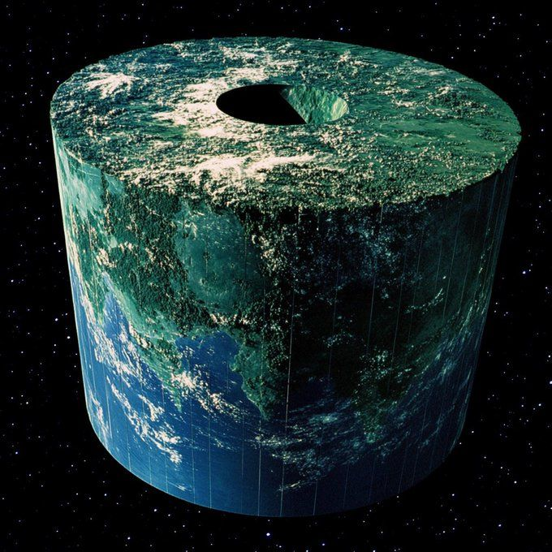

Who Was Anaximander of Miletus?
Anaximander of Miletus was an early Greek philosopher, traditionally dated to the sixth century BCE, who lived in Miletus, an important Ionian city on the western coast of Asia Minor. He is generally regarded as one of the earliest figures in Greek philosophy and is traditionally associated with the Milesian school alongside Thales and Anaximenes.
Anaximander is especially famous for proposing the apeiron, usually translated as "the Boundless," "the Unlimited," or "the Indefinite," as the fundamental principle or origin of things. Unlike Thales, who was traditionally associated with water as the first principle, Anaximander argued, according to the ancient tradition, that the ultimate source of reality could not simply be one of the familiar elements.
The apeiron was understood as an unlimited and indeterminate source from which the different things and opposites of the cosmos arise. Anaximander therefore attempted to explain how a world containing contrary qualities, such as hot and cold or dry and wet, could emerge from a more fundamental and indefinite principle.
His philosophy is important because he attempted to explain the origin and structure of the natural world through underlying principles and processes operating within nature itself. Ancient reports also associate him with influential ideas about the Earth, the heavens, celestial bodies, the origins of living things, and one of the earliest surviving examples of philosophical prose in the Greek tradition.
Anaximander of Miletus: Quick Facts
- Name — Anaximander of Miletus
- Era — Sixth century BCE
- From — Miletus, Ionia, Asia Minor
- Philosophical tradition — Pre-Socratic and Milesian philosophy
- Best known for — The concept of the apeiron, cosmology, and natural philosophy
- Fundamental principle — The apeiron, commonly translated as the Boundless or Unlimited
- Associated thinkers — Thales and Anaximenes
- Known interests — Cosmology, nature, astronomy, geography, and the origins of living things
- Surviving writings — No complete work survives
Anaximander and the Milesian School of Philosophy
Anaximander is traditionally placed within the Milesian school, the group of early Greek thinkers associated with the city of Miletus. Thales, Anaximander, and Anaximenes are commonly studied together because all three are associated with attempts to understand nature in terms of an underlying principle capable of explaining the diversity of the world.
The traditional relationship between the three thinkers should, however, be treated cautiously. Ancient sources describe Anaximander as connected with, and in some accounts as a pupil or successor of, Thales, while Anaximenes is traditionally placed after him. The exact historical relationships between teacher and pupil are not completely secure, even though their philosophical questions show important continuities.
What makes the Milesians especially significant is their interest in questions about nature, change, matter, the cosmos, and the origin of things. Their investigations did not divide philosophy and what we now call science into completely separate fields. Questions about the heavens, weather, living beings, and matter formed part of a broader attempt to understand the structure of reality.
Anaximander represents an especially important development within this tradition. While Thales was traditionally associated with a familiar material principle, water, Anaximander proposed something more abstract: the apeiron, an indefinite or boundless source distinct from the ordinary elements. His philosophy therefore expanded the Milesian search for an originating principle in a new direction.
The Milesian tradition should not be imagined as a formal philosophical school in the modern institutional sense. Rather, the name describes a historical and intellectual connection between thinkers associated with Miletus whose surviving traditions show a continuing interest in natural explanation and in the question of what underlies the changing forms of the cosmos.
Why Is Anaximander Important in Philosophy?
Anaximander is important because he developed one of the earliest known highly abstract accounts of the fundamental principle behind the natural world. Rather than choosing water, air, fire, or another familiar substance, he is traditionally reported to have identified the apeiron as the source from which the heavens and the worlds within them come into being.
His philosophy therefore represents an important development in early Greek thought. The question was no longer simply which visible substance might be the basic material of the world. Anaximander's approach raises the possibility that the ultimate principle must itself be different from the particular and limited things that human beings encounter in ordinary experience.
He also attempted to explain cosmic order through processes operating within nature itself. Ancient testimony associates him with accounts of the separation of opposites, the formation of the Earth and celestial bodies, meteorological phenomena, and the origins of living things. His philosophical interests therefore extended across the structure and development of the natural world.
Anaximander is particularly significant because his surviving fragment also connects natural change with concepts of necessity, order, time, justice, and reparation. This language has generated extensive philosophical interpretation and shows that his inquiry was concerned not only with physical origins but also with the regularity governing coming-to-be and passing-away.
His lasting importance lies partly in the problems he helped formulate. How can a changing world arise from something fundamental? How can opposites coexist and transform into one another? Why does the Earth remain where it is? These questions continued to influence the development of Greek natural philosophy long after Anaximander's own cosmological model had been superseded.
What Did Anaximander Believe?
The surviving evidence about Anaximander is fragmentary. No complete philosophical work by him survives, although ancient sources indicate that he wrote a prose work concerning nature. Historians therefore reconstruct his ideas primarily from later reports and from one famous fragment preserved through the testimony of subsequent ancient authors.
The central idea associated with Anaximander is that the fundamental principle of reality is the apeiron. From this indefinite or boundless principle, according to the ancient tradition, the heavens and the worlds arise, while things that come into being also eventually pass away in accordance with necessity.
Ancient testimony also associates Anaximander with an account of opposites such as hot and cold and with a cosmological process through which the ordered world emerges. Rather than treating the visible cosmos as eternal in exactly its present form, his theory attempts to explain how differentiated structures arise through processes of separation and interaction.
His philosophy also included distinctive ideas about the Earth and its position in the cosmos. Later sources report that he regarded the Earth as unsupported and centrally situated, explaining its stability through its equal relationship to the surrounding regions rather than through the existence of a physical object beneath it.
Ancient reports further connect Anaximander with theories concerning the Sun, Moon, stars, atmospheric phenomena, and the origins of living creatures. Because these details come largely through later testimonia, they should be understood as reconstructions of his thought rather than as parts of a complete philosophical system preserved in his own words.
What Is the Apeiron in Anaximander's Philosophy?
The apeiron is the most famous concept associated with Anaximander. The Greek word can be translated in different ways, including the Boundless, the Unlimited, or the Indefinite. No single English word captures every aspect of its possible meaning, which is one reason the Greek term is often retained in philosophical discussions.
According to the ancient testimony, Anaximander did not identify the fundamental principle with water or any other familiar element. Instead, the apeiron was described as a different kind of nature from which the heavens and the worlds arise. It was also associated with eternity, inexhaustibility, and the continuing processes of coming-to-be and passing-away.
The apeiron should therefore not be imagined simply as an infinitely large version of an ordinary physical substance. Ancient sources distinguish it from the familiar elements, while modern scholars continue to debate whether its primary meaning concerns spatial infinity, indefinite character, lack of boundaries, or some combination of these ideas.
An important feature of the ancient account is that the visible cosmos does not arise as a collection of unrelated things. The apeiron functions as a fundamental source from which differentiated structures and opposing powers emerge, allowing the changing world to be connected with a deeper and more comprehensive principle.
The precise meaning of apeiron remains debated because the surviving evidence does not provide a complete philosophical definition written by Anaximander himself. What is clear is that the concept plays the role of an originating and enduring principle in the ancient tradition and marks a major step toward more abstract accounts of the fundamental nature of reality.
Why Did Anaximander Reject Water as the First Principle?
Thales is traditionally associated with the idea that water is the fundamental principle of nature. Anaximander appears to have taken a different approach by arguing that the underlying principle could not simply be one of the familiar elements. Instead, he identified a different and more indefinite source underlying the natural world.
One influential ancient interpretation, preserved by Simplicius, links this move to the fact that the elements can change into one another. If hot, cold, wet, and dry forms continually oppose and transform into one another, Anaximander may have considered it inappropriate to make one particular element the permanent underlying source of all the rest.
The apeiron therefore functions as something more fundamental than the differentiated constituents of the visible world. From it, according to the surviving tradition, opposing powers emerge and interact to produce the structures and processes of the cosmos. This allows the source itself to be distinguished from the particular forms that arise within the world.
This interpretation should nevertheless be stated cautiously. The explanation concerning the mutual transformation of elements comes through later ancient commentary and may contain an interpretation of Anaximander rather than a complete reproduction of his own argument. His original reasoning cannot be reconstructed in every detail.
What remains philosophically important is the shift represented by his theory. Anaximander did not simply replace water with another familiar element; he proposed that the ultimate origin of the natural world must be different from the particular and opposing substances that appear within that world.
Anaximander's Cosmology: How Did the Universe Begin?
Anaximander is one of the earliest Greek philosophers associated with a systematic account of the origin and structure of the cosmos. According to later testimony, the ordered world developed from the apeiron through a process involving the separation of opposites and the gradual formation of the differentiated structures that constitute the visible cosmos.
One important ancient report describes something productive of hot and cold separating from the eternal source at the beginning of the world. From this process, a sphere or mass of fire developed around the air surrounding the Earth, an image compared in later testimony to bark growing around a tree.
The ancient accounts suggest that this fiery structure later became separated or divided, giving rise to the visible heavenly bodies. The details vary among the surviving testimonia, and the exact sequence of events cannot be reconstructed with complete certainty. Nevertheless, the general picture is one of a cosmos emerging through natural processes of separation, interaction, and differentiation.
Anaximander's cosmology therefore attempted to explain the heavens, the Earth, and the natural order through processes occurring within the cosmos rather than relying entirely on stories about individual gods directly controlling particular natural events. The natural world was treated as possessing an intelligible structure that could be investigated through rational inquiry.
This makes his cosmological theory historically significant even though many details of the model differ radically from modern astronomy. His importance lies partly in the attempt to give an integrated account of cosmic origins in which different natural phenomena are connected through a relatively small number of underlying principles and processes.
What Did Anaximander Think About the Earth?

Ancient sources attribute to Anaximander the view that the Earth was suspended freely in the cosmos rather than resting on a physical support such as water. This was a remarkable feature of his cosmology because it challenged the assumption that every large body must have another object beneath it to prevent it from falling.
One influential report describes the Earth as cylindrical in form, often compared to a stone pillar or drum, with the inhabited surface corresponding to one of its faces. The precise proportions attributed to the Earth vary among ancient reports, but the general description of a cylindrical rather than spherical Earth is consistently associated with Anaximander.
The Earth was said to remain in its central position because it was equally related or equally distant from the surrounding regions of the cosmos. Since there was no greater reason for it to move in one direction rather than another, its symmetrical position was presented as an explanation for its remaining at rest.
This was an important conceptual departure from the idea that the Earth needed something beneath it to hold it up. Anaximander's explanation instead appealed to the structure and symmetry of its position. Later philosophers would develop different cosmological theories, but this argument became historically important as an early attempt to explain stability without physical support.
The details of this model come from later ancient testimony, so they should not be treated as though a complete cosmological text by Anaximander survives. Even so, the ancient tradition strongly connects him with the idea of an unsupported Earth located centrally within the cosmos. :contentReference[oaicite:1]{index=1}
Anaximander's Ideas About the Sun, Moon, and Stars
Anaximander is also associated with an unusual model of the heavenly bodies. Ancient reports describe the Sun, Moon, and stars as connected with fiery structures or rings surrounding the Earth rather than as independent solid objects moving through space in the modern astronomical sense.
According to these reports, fire was enclosed or concealed by air and became visible through openings or passages. The visible Sun, Moon, and stars were therefore explained in connection with the fire seen through these openings. This model attempted to account for changing celestial appearances through the structure of the cosmos itself.
Ancient testimony also uses this framework to explain phenomena such as eclipses and the changing appearance of the Moon. When an opening through which fire was visible became blocked, obscured, or altered, the appearance of the corresponding heavenly body could change.
Some reports preserve numerical relationships between the Earth and the distances or dimensions associated with the celestial rings. These details vary between sources and should be treated cautiously, but they demonstrate that Anaximander's cosmology attempted to provide an ordered spatial structure for the different regions of the heavens.
These astronomical ideas are very different from modern astronomy, but they are historically significant because they represent an attempt to explain celestial phenomena through a structured natural model. The surviving evidence is indirect, so the exact details of Anaximander's astronomical system remain a subject of scholarly reconstruction.
Anaximander, Hot and Cold, and the Opposites
Opposites play an important role in the ancient testimony about Anaximander. The apeiron is associated with the emergence of opposing qualities or powers, particularly hot and cold. These differentiated opposites form an important stage between the indefinite source and the ordered world of particular natural things.
Ancient reports suggest that something productive of hot and cold was separated from the eternal source during the formation of the world. The interaction of these opposing powers then contributed to the development of cosmic structures. The visible world could therefore be understood as arising through differentiation rather than appearing fully formed from the beginning.
Anaximander's philosophy therefore does not simply ask what substance the world is made from. It also asks how differences and changes can arise from a more fundamental source. The emergence, interaction, and temporary dominance of opposites provide part of the explanation for the constantly changing character of nature.
Why Are Opposites Important?
The idea of opposing powers became important in later Greek philosophical discussions of change and nature. In the reconstruction of Anaximander's system, opposites act upon, limit, and contain one another, producing a regulated natural order rather than a permanently uniform or undifferentiated universe.
Their importance is also connected with Anaximander's famous language of justice and reparation. The cycles through which one power becomes dominant and is later limited by another can be interpreted as part of an ordered system of natural change governed by time and regularity. The exact interpretation remains debated, but the connection between opposites and cosmic order is central to the ancient evidence.
What Did Anaximander Mean by Justice and Reparation?
One of the most famous surviving statements attributed to Anaximander describes things as giving "penalty and recompense" or justice and reparation to one another according to the ordering of time. The wording is preserved through later ancient testimony and is commonly regarded as the earliest surviving fragment of Greek philosophical prose.
This language has often been interpreted as a philosophical image for the balance and regular succession of opposing powers in nature. Things come into being, occupy their temporary place within the world, change, and eventually pass away, while opposing forces continually limit one another within an ordered process.
A widely accepted modern interpretation connects the "injustice" and "reparation" primarily with the conflict and mutual encroachment of opposites such as hot and cold. When one power exceeds or dominates another, the ordering of time eventually brings a compensating change, producing the regular cycles characteristic of the natural world.
It is important not to interpret this language as proof that Anaximander simply believed the physical universe was governed by a human-like moral judge. The surviving fragment is brief and poetic, and scholars disagree about precisely how literally its language of justice should be understood.
The passage is nevertheless important because it connects the processes of nature with the concepts of order, time, balance, and change. It suggests a cosmos in which coming-to-be and passing-away occur according to regular patterns rather than through entirely arbitrary events. :contentReference[oaicite:2]{index=2}
Why Did Anaximander Think the Earth Did Not Need Support?
A particularly important feature of Anaximander's cosmology is the claim, preserved by later sources, that the Earth did not need to rest on another physical object. Instead of asking what substance lay beneath the Earth, his explanation addressed the conditions that would cause the Earth to move in one direction rather than another.
The traditional explanation is based on the Earth's position at the center of the cosmos. If the Earth is equally distant from the surrounding regions, there is no greater reason for it to move in one direction rather than another. Its position can therefore be explained through symmetry or equilibrium rather than physical support.
This idea is philosophically significant because it replaces the question "What is holding the Earth up?" with a different question: "Why should an object positioned symmetrically move in one direction rather than another?" The change in the question itself represents an important development in the search for structural explanations.
Anaximander's argument is sometimes described as an early example of reasoning from the principle of sufficient reason or from symmetry, although these later philosophical terms should not be treated as Anaximander's own vocabulary. The essential idea is that equal conditions provide no reason for movement toward one side rather than another.
Although the cosmological model itself was incorrect by modern standards, the reasoning illustrates the kind of structural explanation characteristic of early Greek natural philosophy. It attempted to explain an apparently obvious feature of the world without introducing an additional and unexplained object whose own support would then require further explanation.
What Did Anaximander Say About the Origin of Life?
Ancient sources also associate Anaximander with an early naturalistic account of the origins of living things. Reports suggest that living creatures first arose from moisture affected by the heat of the Sun, placing the beginnings of life within the changing physical conditions of the Earth rather than attributing every species directly to a mythological act of creation.
Some later testimony describes the earliest animals as originating in moist environments and initially being enclosed within bark-like or protective coverings. As the Earth became drier and environmental conditions changed, these creatures were said to have emerged and adapted to their new surroundings.
Ancient sources also attribute to Anaximander the idea that human beings developed from other kinds of living creatures, often described as fish-like or aquatic animals. One reported argument was that human infants require an unusually long period of care and could therefore not have survived independently in the earliest stages of human existence.
These reports are historically important because they attempt to explain living beings and human origins through natural processes. They should not, however, be confused with Charles Darwin's modern theory of biological evolution, natural selection, or genetics. Anaximander's ideas belong to a very different intellectual and scientific context.
The exact details of Anaximander's biological views are difficult to establish because the evidence comes from later sources and is limited in scope. They should therefore be presented as ancient testimony about an early naturalistic theory of life's origins rather than as a fully documented evolutionary system in the modern scientific sense. :contentReference[oaicite:3]{index=3}
Anaximander and Geography
Anaximander is traditionally associated with important early geographical work, most notably a map of the inhabited world or oikoumene. Ancient geographical writers report that he produced a representation of the known lands and seas, making him one of the earliest Greek figures connected with the attempt to represent the world as a single intelligible whole.
The original map has not survived, and its exact appearance cannot be known with certainty. Later evidence suggests that Anaximander's map represented the known world in a broad and schematic form rather than with the geographical precision expected of a modern map. It was nevertheless an important attempt to organize geographical knowledge within a coherent visual representation.
Ancient tradition also connects the work of the later Milesian geographer Hecataeus with Anaximander's earlier map. Hecataeus was said to have revised or improved the geographical representation of the inhabited world, suggesting that cartographical inquiry formed part of a continuing intellectual tradition associated with Miletus.
Whether every detail of the traditional attribution is historically secure remains uncertain. Nevertheless, the evidence strongly reflects the broad interests associated with Anaximander, who investigated not only abstract questions about first principles but also the physical structure, extent, and arrangement of the world known to his contemporaries.
Geography, astronomy, and cosmology were closely connected in early Greek natural philosophy because understanding the Earth also required understanding its place within the larger cosmos. Anaximander's geographical interests therefore complement his cosmological project: both sought to transform a complex world of places and phenomena into an ordered picture that could be investigated through reason.
Anaximander and the Beginning of Natural Philosophy
Anaximander belongs to the early Greek tradition now called natural philosophy, in which thinkers investigated nature, change, matter, life, and the cosmos through rational inquiry. This modern label should not suggest that ancient thinkers divided philosophy and science into the sharply separate disciplines familiar today; questions about nature formed part of a broader investigation into the structure and origin of reality.
His approach is particularly important because he sought an underlying principle capable of accounting for the diversity and continual change of the natural world. The apeiron provided a more abstract alternative to identifying one familiar element as the source of everything, allowing the visible world to arise from something more fundamental than its particular constituent forms.
Anaximander also attempted to explain the cosmos as an ordered system governed by natural processes. Ancient testimony associates him with theories concerning the separation of opposites, the formation of the Earth, the arrangement of celestial bodies, atmospheric phenomena, and the origins of living creatures.
His explanations should not be confused with modern scientific theories. Many of his cosmological and biological conclusions were incorrect by modern standards, and the methods of experimental science had not yet developed in their later forms. His historical importance lies instead in the attempt to make the natural world intelligible through relatively general principles and processes.
For this reason, Anaximander occupies an important place in the history of philosophical attempts to explain nature. He represents an early stage in the development of questions that would later belong to metaphysics, cosmology, astronomy, biology, and the philosophy of nature, even though these fields did not yet exist as separate disciplines. :contentReference[oaicite:1]{index=1}
Did Anaximander Write a Book?
Anaximander is traditionally credited with writing a prose work concerning nature, often referred to by the conventional Greek title On Nature. The work itself does not survive as a complete text, and the traditional title may reflect the later practice of grouping early philosophical writings concerned with nature under a common description rather than preserving Anaximander's own original title with certainty.
Ancient testimony nevertheless strongly associates Anaximander with written philosophical prose. He is often regarded as one of the earliest Greek thinkers to have composed a philosophical treatise in prose, an important development in the history of Greek intellectual writing, although our knowledge of the work itself is extremely limited.
Only one short statement is especially famous as a fragment preserving wording attributed to Anaximander. It concerns the coming-to-be and passing-away of things and their giving justice or reparation to one another according to the ordering of time. The exact extent of the surviving verbatim wording remains a subject of scholarly discussion.
Most of our knowledge of Anaximander's philosophy therefore comes from later authors who reported, interpreted, quoted, or discussed earlier philosophical ideas. These sources are indispensable, but they do not provide the same kind of evidence as possessing a complete work written and preserved directly by Anaximander himself.
Because the surviving evidence is fragmentary, historians must distinguish carefully between material directly attributed to Anaximander, reports derived from earlier sources, and modern reconstructions of his complete philosophical system. This distinction is essential for understanding both the importance and the limits of our knowledge of his thought. :contentReference[oaicite:2]{index=2}
How Do We Know About Anaximander?
The historical evidence for Anaximander is incomplete. Unlike philosophers such as Plato and Aristotle, we do not possess a complete surviving work through which we can directly study his philosophy. Modern knowledge of his ideas depends largely on a combination of fragments, quotations, and testimonia—reports about his views preserved by later ancient writers.
Aristotle and Theophrastus
Aristotle and his successor Theophrastus are especially important for understanding the early Greek natural philosophers. Aristotle discussed his predecessors when developing his own philosophical theories, while Theophrastus produced systematic investigations of earlier views on nature. Much later doxographical material ultimately depends, directly or indirectly, on this Peripatetic tradition.
Simplicius
Simplicius, a sixth-century CE commentator on Aristotle, preserved an especially important report concerning Anaximander's apeiron and the principle from which the heavens and worlds arise. He also preserves the famous wording attributed to Anaximander concerning coming-to-be, passing-away, justice, and the ordering of time, making his testimony central to modern reconstructions of the philosopher.
Other Ancient Testimony
Other ancient authors preserve reports concerning Anaximander's cosmology, astronomy, geography, and views about living things. Writers such as Hippolytus, Pseudo-Plutarch, Diogenes Laertius, and later geographical authorities contribute to the surviving tradition, although the reliability and sources of individual reports must be evaluated separately.
Reconstructing Anaximander therefore requires a careful comparison of sources written centuries after his lifetime. Ancient authors often interpreted earlier thinkers through their own philosophical concepts, and modern scholars sometimes disagree about how much of a particular report should be attributed directly to Anaximander rather than to later interpretation or reconstruction. :contentReference[oaicite:3]{index=3}
What Do We Actually Know About Anaximander?
Anaximander is a good example of why the study of Pre-Socratic philosophy requires careful treatment of historical evidence. His philosophical importance is well established, but most information about his system comes through later writers rather than through a complete surviving work composed in his own hand.
The strongest evidence concerns his association with Miletus, his role in early Greek natural philosophy, the ancient tradition connecting him with the apeiron, and the famous fragment concerning coming-to-be, passing-away, and the ordering of time. Beyond these central points, the degree of certainty varies considerably from one aspect of his philosophy to another.
Relatively Well-Attested
- Anaximander was associated with Miletus.
- He is traditionally connected with the Milesian school.
- Ancient testimony associates him with the apeiron as a fundamental principle.
- A fragmentary statement concerning coming-to-be, passing-away, justice, and the ordering of time is attributed to him.
- Ancient sources associate him with cosmological and astronomical ideas.
Traditionally Attributed
- A geographical map of the inhabited world.
- A model or representation of the heavens.
- Particular astronomical measurements and cosmic distances.
- Specific explanations concerning the origin and development of living creatures.
Uncertain or Debated
- The exact meaning Anaximander intended by the word apeiron.
- The precise physical nature of the apeiron.
- The exact mechanism by which the cosmos emerged from the apeiron.
- The precise details of his astronomical model.
- The exact form and content of his original written work.
Anaximander, Thales, and Anaximenes
The three major figures traditionally associated with the Milesian tradition are Thales, Anaximander, and Anaximenes. Their theories illustrate different approaches to one of the central questions of early Greek philosophy: what underlying principle can explain the origin, diversity, and continual transformation of the natural world?
- Thales — traditionally associated with water as the fundamental principle.
- Anaximander — associated with the apeiron, the Boundless or Indefinite.
- Anaximenes — associated with air as the fundamental principle.
The comparison should not be understood as a simple and certain sequence in which each philosopher consciously corrected the previous one. The surviving evidence is too limited to reconstruct every historical interaction. Nevertheless, their theories show significant intellectual continuity because each is associated with the search for a fundamental archê, or originating principle.
Anaximander's position is especially distinctive because it moves beyond a familiar physical substance and proposes a more abstract source. Anaximenes, traditionally placed after him, returned to a determinate physical principle—air—while developing condensation and rarefaction as processes through which different forms of matter could arise.
Together, these three figures demonstrate the diversity of early Greek attempts to explain nature. Their importance lies not only in the particular answers they proposed but also in the continuing effort to connect the changing world of experience with a more fundamental and intelligible account of reality.
Anaximander's Search for the First Principle of Reality
One of the most important questions in early Greek philosophy was: What is the fundamental principle from which the natural world arises? The Greek term often used in later discussions of this question is archê, a word that can refer to a beginning, source, origin, ruling principle, or fundamental explanatory basis.
Anaximander's answer, according to ancient testimony, was the apeiron. This concept allowed him to avoid identifying the ultimate source of reality with one particular visible element such as water, air, earth, or fire. The fundamental principle was instead presented as something more indefinite and more comprehensive than the differentiated things arising within the cosmos.
The search for such an underlying principle became an important part of the development of Greek metaphysical and cosmological thought. Later philosophers would propose radically different answers, including numbers, atoms, being, forms, substances, and various conceptions of matter as candidates for what is most fundamental in reality.
Anaximander's contribution therefore lies not simply in giving one particular answer, but in showing how the question of ultimate reality could be formulated at a high level of abstraction. The fundamental source need not resemble any particular object encountered in ordinary experience.
His theory also connects the question of what reality fundamentally is with the problem of how change occurs. The apeiron is not merely presented as a static substance; the ancient tradition connects it with the emergence of worlds, the separation of opposites, and the continual processes through which particular things come into being and eventually pass away. :contentReference[oaicite:4]{index=4}
Anaximander's Influence on Greek Philosophy
Anaximander's ideas became part of the continuing development of Pre-Socratic philosophy. Later thinkers proposed very different accounts of matter, change, permanence, number, being, plurality, and the structure of the cosmos, but many continued to address problems that Anaximander had already approached in an early and influential form.
His attempt to explain the natural world through an underlying principle helped establish questions that later became central to metaphysics and cosmology. What is ultimately real? How can the many changing things of experience arise from something fundamental? What explains the order and structure of the universe?
The idea of the apeiron is particularly important because it represents an early attempt to think about reality in terms of something more fundamental than the familiar objects and elements encountered in everyday experience. Its abstract character made it a distinctive alternative within the Milesian search for an originating principle.
Anaximander's influence should not, however, be understood as a simple chain in which later philosophers merely accepted his doctrines. Subsequent Greek thinkers often rejected, transformed, or replaced earlier theories. His importance lies partly in helping establish problems and explanatory strategies that later philosophers could develop in very different directions.
His lasting legacy is therefore found both in his particular ideas and in the scope of his inquiry. By connecting questions about the origin of reality with the structure of the cosmos, the Earth, celestial phenomena, geography, and living things, Anaximander helped demonstrate how broadly a philosophical investigation of nature could extend. :contentReference[oaicite:5]{index=5}
Anaximander of Miletus Explained Simply
Anaximander was an early Greek philosopher who wanted to understand where the natural world came from, what it was ultimately based on, and how the ordered cosmos could emerge and change over time. He belonged to the Milesian tradition, one of the earliest traditions of Greek natural philosophy.
Instead of saying that everything ultimately comes from water or another familiar element, he is traditionally associated with the idea of the apeiron, an indefinite or boundless principle from which the heavens and the things within the cosmos arise, according to ancient testimony.
His basic idea was that the visible world is constantly changing, so its ultimate source may be something more fundamental than any one particular thing we can see. From this underlying principle, opposing forces and different forms of nature emerge, interact, and eventually pass away.
Anaximander also tried to explain the structure of the Earth and the heavens through natural processes. Ancient sources famously report that he believed the Earth could remain suspended without resting on a physical support because of its symmetrical position within the cosmos.
- Question: What is the fundamental source of reality?
- Answer: The apeiron, according to ancient testimony.
- Main interest: Nature, the cosmos, change, and the origins of things.
- Cosmological idea: The Earth was traditionally reported to be suspended without a physical support.
- Philosophical importance: He developed an early highly abstract account of the fundamental principle of nature.
A Famous Fragment Associated with Anaximander
“They give penalty and recompense to one another for their injustice according to the ordering of time.”
Frequently Asked Questions About Anaximander
Who was Anaximander of Miletus?
Anaximander of Miletus was an early Greek philosopher associated with the Milesian school and the development of Pre-Socratic natural philosophy. He is especially known for the concept of the apeiron.
What is Anaximander famous for?
Anaximander is most famous for the apeiron, his proposed fundamental principle of reality, as well as ancient reports about his cosmology, astronomy, geography, and ideas about the origins of life.
What did Anaximander believe?
Anaximander is traditionally reported to have believed that the fundamental principle of reality was the apeiron, an indefinite, boundless, or unlimited source from which existing things arise.
What is the apeiron according to Anaximander?
The apeiron is the fundamental principle associated with Anaximander. It is commonly translated as the Boundless, Unlimited, or Indefinite. Its precise meaning and physical status are debated by scholars.
Why did Anaximander believe in the apeiron?
Anaximander appears to have rejected the idea that one familiar element such as water could adequately serve as the ultimate source of all things. The surviving evidence suggests that he proposed a more fundamental and indefinite principle instead.
What did Anaximander think the Earth was like?
Ancient sources describe Anaximander as believing that the Earth was cylindrical and suspended freely in the cosmos. It was traditionally said to remain in its position because it was equally distant from the surrounding regions.
Did Anaximander believe the Earth was supported by water?
No. Unlike the view traditionally attributed to Thales, Anaximander is reported to have believed that the Earth did not require physical support. His explanation appealed to its central and symmetrical position within the cosmos.
What did Anaximander believe about the universe?
Anaximander is traditionally associated with a cosmological model in which the ordered world emerges from the apeiron through processes involving opposing forces such as hot and cold. Ancient sources also describe models of the Earth and heavenly bodies attributed to him.
Did Anaximander believe in the evolution of humans?
Ancient testimony attributes to Anaximander the idea that human beings originated from other living creatures because human infants require prolonged care. This is sometimes described as an early evolutionary idea, but it should not be equated with modern evolutionary biology.
Did Anaximander invent the first map?
Ancient sources traditionally associate Anaximander with producing a map of the inhabited world. The precise nature and extent of this map are uncertain because the original artifact does not survive.
Did Anaximander write a book?
Anaximander is traditionally associated with a work concerning nature, often referred to as On Nature. No complete copy of the work survives, and his philosophy is known primarily through later ancient testimony and fragments.
Was Anaximander a Pre-Socratic philosopher?
Yes. Anaximander is commonly classified as a Pre-Socratic philosopher and is one of the principal figures associated with the Milesian school of early Greek philosophy.
Who influenced Anaximander?
Anaximander is traditionally associated with Thales, although the precise historical relationship between the two thinkers is not completely certain. His philosophy also developed questions about nature that were central to the Milesian tradition.
Who followed Anaximander?
Anaximenes is traditionally associated with the Milesian tradition following Anaximander. He proposed air as the fundamental principle and explained transformations through processes of rarefaction and condensation.
Why is Anaximander important today?
Anaximander remains important because he represents an early attempt to explain the fundamental structure and origin of reality through an abstract principle and natural processes. His ideas helped shape important questions in the history of metaphysics and cosmology.
Related Ancient Greek Philosophers
Anaximander belongs to the early Greek philosophical tradition that developed questions about nature, reality, matter, change, and the cosmos. Explore other philosophers who developed different answers to these questions.
Philosophy Branches Connected to Anaximander
Anaximander's search for the fundamental principle of reality is closely connected with metaphysical questions about what ultimately exists. His theories about the origin and structure of the cosmos also connect directly with cosmology and natural philosophy.
Why Anaximander Still Matters
Anaximander did not leave behind a complete philosophical system that can be read directly today. Much of what we know about him comes from later ancient authors, and several details of his philosophy remain uncertain.
Nevertheless, his place in the history of philosophy is remarkable. The concept of the apeiron represents an early attempt to explain the diversity of the natural world through something more fundamental than any particular visible element.
His questions about the origin of the cosmos, the position of the Earth, the nature of change, and the relationship between opposing forces helped establish problems that would continue through Greek philosophy and eventually become central to metaphysics and cosmology.
Anaximander's importance therefore lies not only in the answers attributed to him, but also in the ambitious philosophical questions he represents: what is the ultimate principle of reality, how does the cosmos arise, and how can the changing natural world be explained through reason?
Explore Great Philosophers